SharpAlert might not support your country. Find supported countries in supported regions.
SharpAlert notifies you of emergency alerts in your area, entirely from your computer!
If you're having trouble opening SharpAlert, try installing the .NET 8 Desktop Runtime!
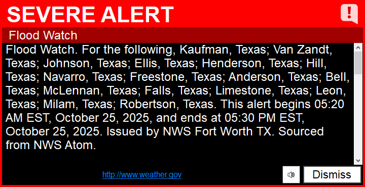
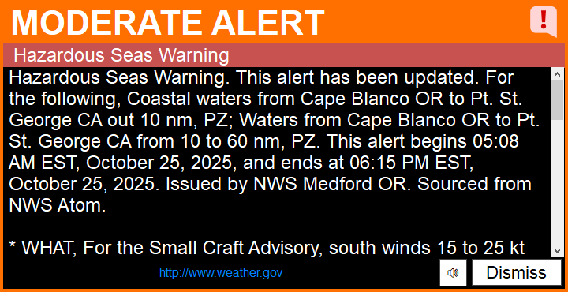
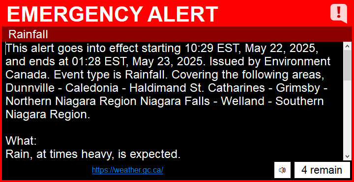
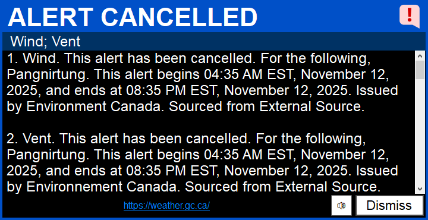
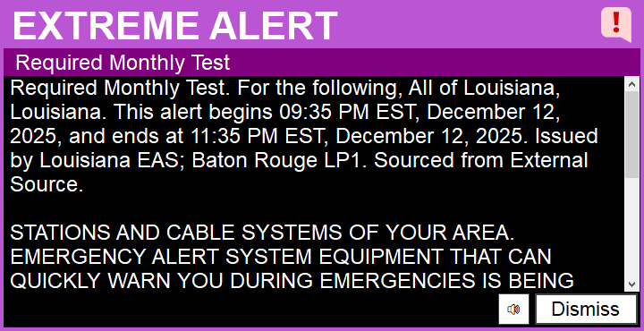
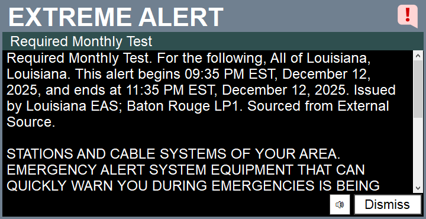
What can I do after I get SharpAlert?
Right-click the tray icon for more options. All windows can be found in Settings.
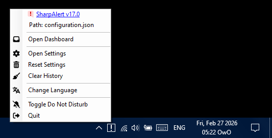
Stylization Choices
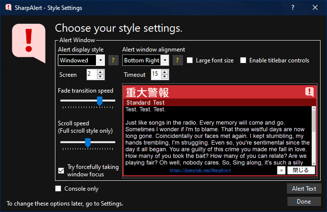
You can choose from five styles to have alerts appear as, and configure additional settings for them, such as where you want the window to appear on the screen you choose, font sizing, and more. Some display styles appear in full screen!
Customizable Sounds
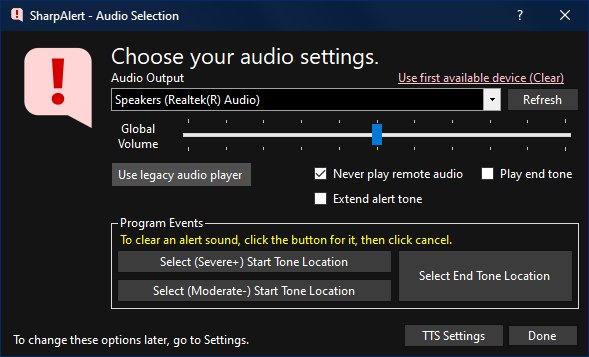
You can change where sounds are played via audio output, and alert sounds can be changed to anything you want.
Togglable Regions
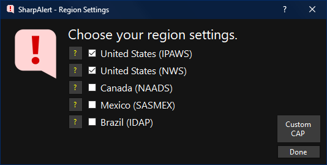
There are 4 different regions with 5 alert feeds to choose from. You can always change these.
Specific Locations Only
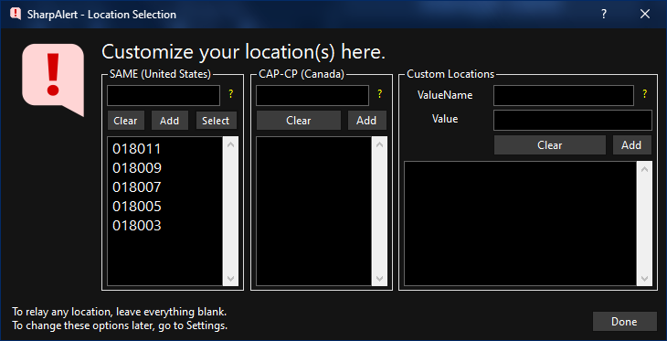
You can make a list of locations you want alerts for (Alert Settings > Manage Locations). This means that if an alert doesn't have at least one of the locations in your list, you will not see the alert. (Clear all lists to disable location filtering!) If you are filtering locations in the United States, click the Select button to see a list of states and counties to choose from.
Discord Webhooks
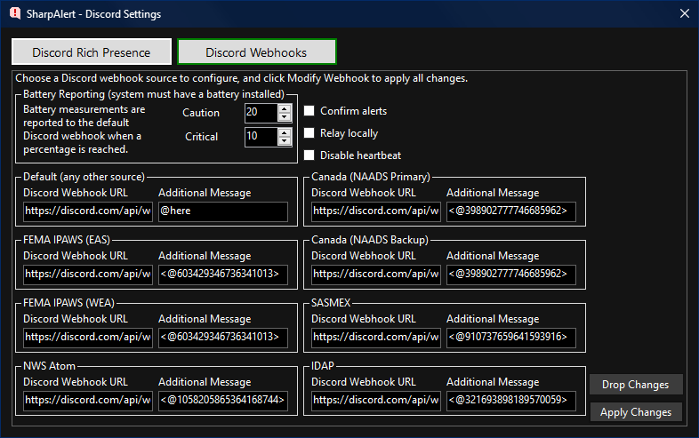
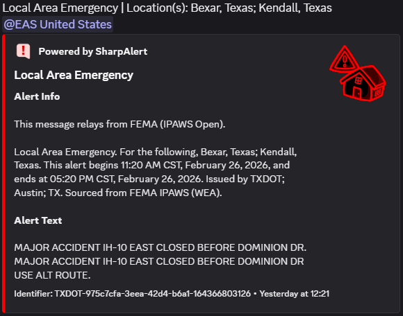
Using Discord Webhooks, you can forward alerts directly to Discord.
What is SharpAlert?
SharpAlert works similarly to how you get emergency alerts on your TV, radio station, or mobile phone!
Saying a bit more, SharpAlert works closely to how Wireless Emergency Alerts would work on a device like your phone, or more closely to the Emergency Alert System on a TV or radio station broadcast.
In the background, SharpAlert constantly polls for new alerts. When an alert is received, the program checks it against your preferences. Your preferences could be to allow alerts only, or to only allow alerts from certain locations. If the alert is allowed to relay,
a window with information is opened that appears tells you the event type, and general extended information about the alert. This window appears above all other open windows on the screen.
You can play TTS (Text-To-Speech) or embedded audio (included within some alerts) by clicking the play button.
TTS or embedded audio will be played automatically if you have SharpAlert in a full screen style.
SharpAlert can receive alert information from the United States in the form of both IPAWS (Integrated Public Alert & Warning System) and the NWS API (National Weather Service API), Canada in the form of NPAS (National Public Alerting System) [Listed in SharpAlert as NAADS], Mexico in the form of SASMEX (Sistema de Alerta Sísmica Mexicano), and Brazil in the form of IDAP (Divulgação de Alertas Públicos).
Each option is pick and choose, as they can be enabled and disabled separately at any time within Region Settings. You'll need to restart the program if you change them!
Alert sounds and more can be customized within SharpAlert.
Severe Emergency Alert (Played when the alert severity is Severe or higher)
Moderate Emergency Alert (Played when the alert severity is Moderate or lower)
The availability and uptime of the providers (regions) supported by SharpAlert are not 100% guaranteed. Do not always rely on one source alone for messages and alerts. Always have at least one additional backup.
SharpAlert checks for alerts frequently in the background. This could result in increased data usage.
The download for the installer release of SharpAlert is currently hidden until the next release. Please download and use the standalone release instead.